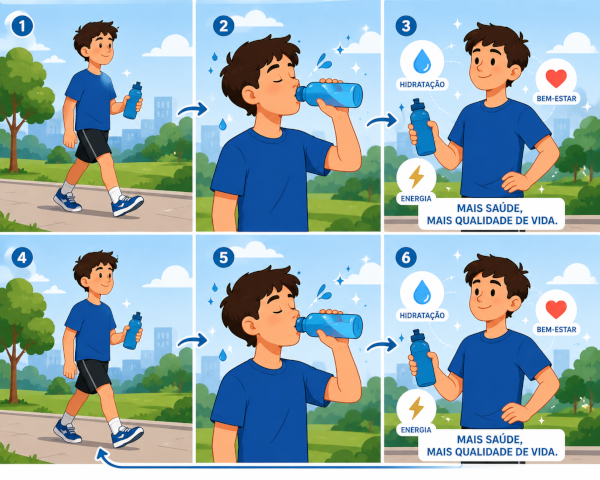

A Importância de Beber Água
A água é um dos elementos mais importantes para a vida. Cerca de 60% do corpo humano é composto por água, o que mostra o quanto ela é essencial para o funcionamento adequado do organismo. Beber água regularmente não é apenas uma questão de matar a sede, mas sim de cuidar da saúde e garantir que o corpo desempenhe suas funções da melhor forma possível.


Algumas imagens meramente ilustrativas
Como a hidratação pode te ajudar?
A hidratação adequada ajuda a regular a temperatura corporal, transportar nutrientes, eliminar toxinas e manter o bom funcionamento dos órgãos. Além disso, a água contribui para a saúde da pele, melhora a digestão, auxilia na circulação sanguínea e pode até aumentar os níveis de energia e concentração ao longo do dia.
O que acontece se você não se hidratar corretamente?
Quando o corpo não recebe a quantidade necessária de água, podem surgir sintomas como cansaço, dores de cabeça, tontura, dificuldade de concentração e até problemas mais graves relacionados aos rins e ao sistema cardiovascular. Muitas vezes, a sensação de fome excessiva também pode estar ligada à falta de hidratação.
Especialistas recomendam o consumo diário de água, embora a quantidade ideal possa variar de acordo com fatores como idade, peso, clima e nível de atividade física. Em dias mais quentes ou durante exercícios, a necessidade de hidratação aumenta ainda mais.
Criar o hábito de beber água ao longo do dia é um investimento simples e eficaz para a saúde. Pequenas atitudes, como carregar uma garrafa de água, definir lembretes ou substituir bebidas açucaradas por água, podem trazer grandes benefícios para o bem-estar e a qualidade de vida.
